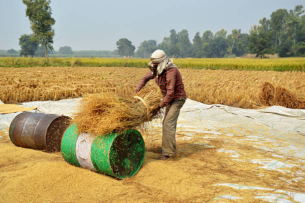

Introduction
Paddy cultivation is the process of growing rice crops. Rice is a staple food for a large portion of the world's population. It is mainly cultivated in areas with abundant water supply, such as paddy fields or terraces.
Benefits of Paddy Cultivation
- Rice is a nutritious food source, rich in carbohydrates and essential vitamins.
- Paddy cultivation helps to conserve water as rice crops require a lot of water for their growth.
- It provides employment opportunities for farmers and agricultural workers.
- Rice cultivation plays a crucial role in maintaining food security and reducing poverty in many regions.
Paddy Cultivation Process
- Land preparation
- Seed selection and soaking
- Transplanting seedlings
- Water management
- Fertilizer application
- Weed and pest control
- Harvesting
1.plough the land
Paddy farmers used to get their fields ready before the rainy season. The weeds are cleared and the field is ploughed by buffaloes or tractors to a depth of few inches. Manures and fertilizers are added to the soil. The whole surface then remained covered with water of about 2.5 cm. The field is then ready for receiving seedlings from the nursery.
2.seed selection and soaking
Seed is the basic foundation of any crop. It must be grown, harvested, and processed correctly for the best yield and quality results. Good quality seeds lead to lower seed rate, better emergence (>70%), more uniformity, less replanting, and vigorous early growth which helps to increase resistance to insects and diseases and decrease weeds.
3. Tranplanting Seedling
Duration Time for Paddy Transplanting
Transplanting is the most common and elaborative method of crop establishment for rice in Asia. Rice seedlings grown in a nursery are pulled and transplanted into puddled and leveled fields 15 to 40 days after seeding (DAS). Rice seedlings can either be transplanted manually or by machine.
Transplant by peoples
Right numbers of seedlings are detached from the bundle, protecting the roots by holding them in three fingers while inserting them into the soil right under a mark on the planting wire. The seedlings are planted not shallower than 1.5 cm but not deeper than 5 cm
Machine Transplanting
It is suitable for transplanting paddy seedlings in puddled soils. It is a single wheel driven, riding type machine and fitted with diesel engine. It transplants seedlings from mat type nursery in eight rows in a single pass. The drive wheel receives power from the engine through V-belt, cone clutch and gearbox. A propeller shaft from the gearbox provides power to the transplanting mechanism mounted over the float. The float facilitates the transplanter to slide over the puddled surface. The tray containing mat type nursery for 8 rows is moved sideways by a scroll shaft mechanism, which converts rotary motion received from the engine through belt-pulley, gear and universal joint shaft into linear motion of a rod connected to the seedling tray having provision to reverse the direction of movement of tray after it reaches the extreme position at one end. Fixed fork with knock out lever type planting fingers (cranking type) are moved by a four bar linkage to give the designed locus to the tip of the planting finger. The cost of the equipment is approximately Rs. 2.25 lakh. It can transplant 1.2-1.5 ha/day with the help of 5 persons by working at a speed of 1.1-1.5 km/h. The cost of operation with the transplanter is Rs. 3,000/ha as compared to Rs. 5000/ha by traditional method. It saves about 65% labour and 40% cost of operation as compared to manual transplanting. Four row self-propelled walking type and six/eight row four wheels driven riding type self-propelled transplanter are also commercially available.
4.Water Management
Crop water requirement is the water required by the plants for its survival, growth, development and to produce economic parts. This requirement is applied either naturally by precipitation or artificially by irrigation. Average Water requirement – 1100 mm Average Water requirement (SRI) – 700 mm The daily consumptive use of rice varies from 6-10 mm and total water is ranges from 1100 to 1250 mm depending upon the agro climatic situation, duration of variety and characteristics of the soils.
5.Fertilizer Applicatiom
The most suitable fertilizer for paddy is Ammonium sulphate. Growers apply ammonium sulphate primarily where they need supplemental N (Nitrogen based) and S (Sulphur based) to meet the nutritional requirement of growing plants.
Here you can see the difference of Fertiligers
6.Weed and pest control
How to control weeds in paddy
To prevent losses in yield, weed control is an important practice in paddy field. Weed control can be done through manual weeding by hand & mechanical weeding by using implements such as sickles, hoes etc. & can also be controlled by herbicide as a chemical control. Hand weeding is an efficient method of weed control.
How to control pests in paddy

Removal of weeds from the surrounding fields. Avoiding indiscriminate use of chemical insecticides as it leads to destring of natural enemies. Use paddy cultivars resistant to this insect pests. Avoid the heavy use of Nitrogenous Fertilizers.
7.Harvesting
There are two methods of Harvesting
1.Manual harvesting
2.Machine harvesting
Manual harvesting 
In manual harvesting, workers collect rice plants from the rice paddies using sharp knives. Then, they carefully clean them and separate the damaged ones. Mechanical harvesting can be done by using machines that combine all the operations, such as cutting, threshing and cleaning.
Machine harvesting
The machine cuts the paddy stubbles and laid down the harvested crop in the field. Later, the harvested rice stem should be bundled and stacked in a dry place if not threshed immediately.
Conclusion
Paddy cultivation is an important agricultural practice with numerous benefits. By following the proper cultivation process, farmers can ensure a successful rice harvest and contribute to food security.
Start your own paddy cultivation